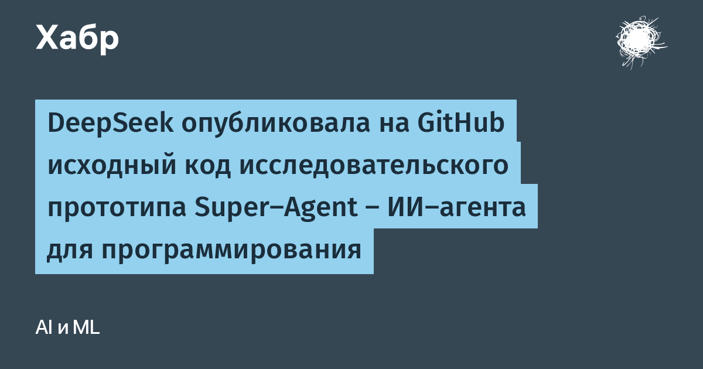

DeepSeek выложила на GitHub репозиторий dsh-superagent-prototype — исходный код своего «Суперагента» для написания кода в репозиториях GitHub. Это продолжение линии Harness, которую компания представила в начале ноября: тогда был открыт сам рантайм агентов («всё есть плагин»), а теперь доступно ядро автономного агента, который берёт задачу, выполняет её в отдельной сессии и папке, а результат возвращает в тот же разговор — например, готовым пул-реквестом.
Агент приступает к работе в двух случаях: если запрос прислал авторизованный пользователь или если задача подходит под правила, которые команда настроила заранее. Ему можно дать доступ к чату — участники ставят задачи простым упоминанием. Внутри рабочей сессии агент выполняет команды без подтверждения запускающего, но в основной код изменения попадают только через людей-ревьюеров. Автомердж доступен для пул-реквеста с одобрениями и правкой не меньше 200 строк — мелочь агент себе в main не протаскивает. Для контроля предусмотрена веб-панель.
Самое интересное для тех, кто следит за безопасностью агентских систем: по умолчанию агент не выполняет неявно сформулированные запросы — сообщение без прямого обращения, реплику другого бота или текст от неавторизованного пользователя. Такие сообщения он не исполняет, а анализирует и фиксирует в журнале как «потенциально принятые». По сути это встроенная защита от prompt injection и от захвата агента третьими лицами через общий чат — ровно та проблема, на которой уже ловили коммерческих агентов.
В DeepSeek подчёркивают: опубликованное — исследовательский прототип, а не финальный продукт. Код советуют сначала проверить на ошибки и доработать под свои нужды. В репозитории — модули src, prompts, skills, docs с архитектурой и cookbook, тесты и примерами; лицензия MIT.